Versioning in the Digital Edition of Fernando Pessoa
Ulrike Henny-Krahmer (University of Rostock)
International workshop
"Pessoa digital: development and sustainability measures
for the Digital Edition of Fernando Pessoa"
July 3, 2023
Slides at: https://hennyu.github.io/pessoa_23/
Overview
- Versioning in digital scholarly editions
- Current practice in "Pessoa digital"
- Proposals for new approaches
1. Versioning in digital scholarly editions
Digital scholarly editions can change...
|
The fact that such changes can occur on an ongoing basis is both one of the great potentials and one of the great terrors of digital scholarly resources. |
Why can changes be a problem?
- "Standards for scholarly citation, which solidified around print resources, take advantage of [...] objectual stability."
- "changes may not merely be possible but required in order to keep [the digital resource] operational"
(Broyles 2020, para. 1, 2)
Why can changes be a problem?
- link rot: "online resources linked in references simply disappear from the internet"
- context drift: "links function but the content on the website has changed since it was referenced"
(Broyles 2020, para. 3)
What to do?
Broyles (2020, para. 4): "in order to make sure such editions are citeable and their history is intelligible, their creators and publishers must assign version numbers in tandem with any changes made to edition content"
What to do?
- version numbers as a simple and practical method
- to identify a state of a resource
- to communicate the history of a resource
- to communicate the relationship between different states
(Broyles 2020, para. 6)
But...
no consensus practice in digital scholarly editing:
- how should different versions be identified?
- what should version numbers communicate?
What is the current practice for versioning in DSE?
| Bürgermeister 2023: 65 out of 257 examined editions have a type of versioning |
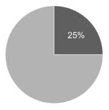 |
Example humboldt digital:
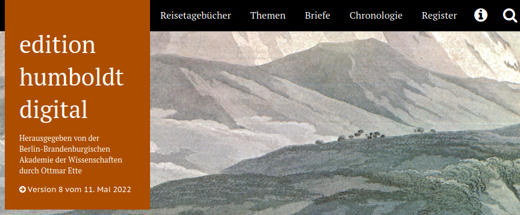Example humboldt digital:
| 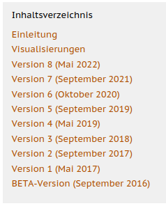 | 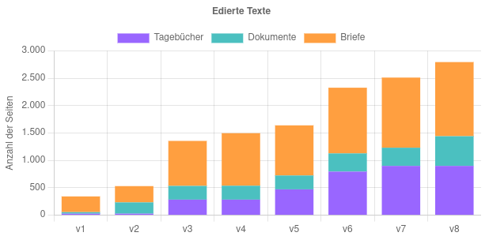 | 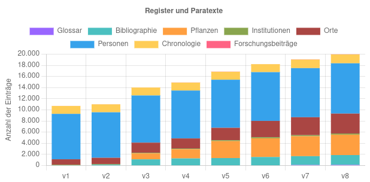 |
Overviews of different versions, statistics
Example humboldt digital:
| Description of the new contents and developments in words for each version | 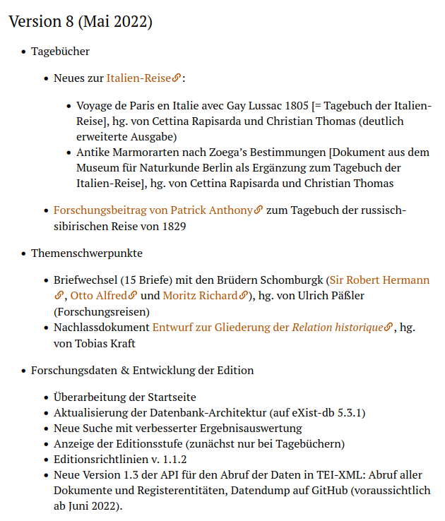 |
Example Der Sturm:
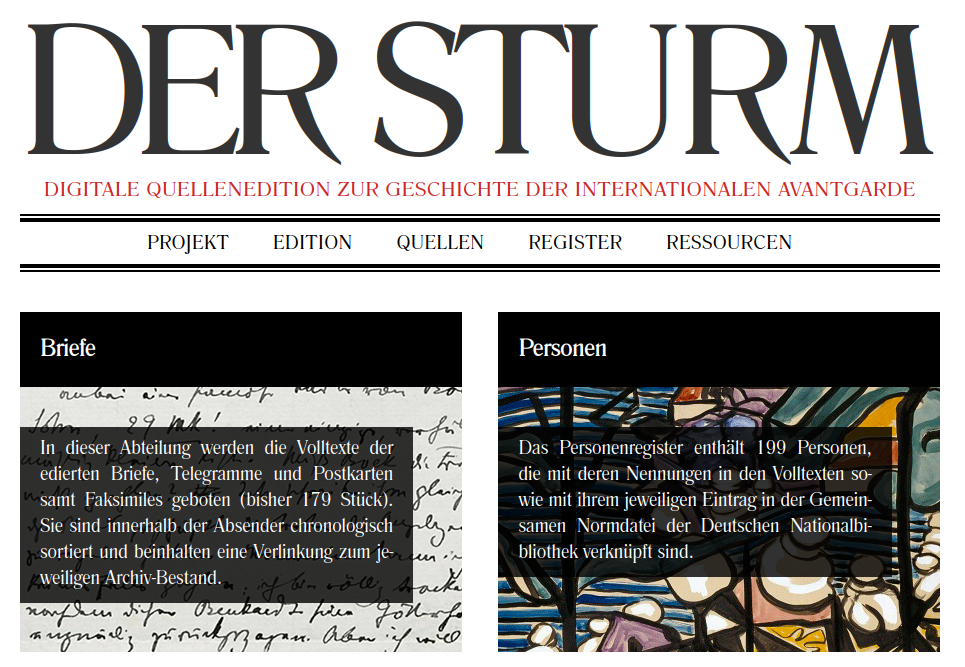Example Der Sturm:
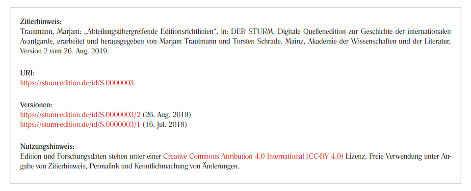Example Der Sturm:
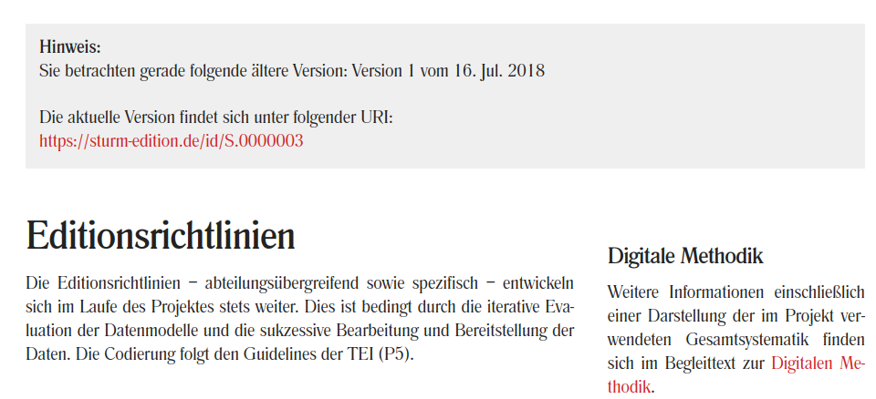Example Der Sturm:
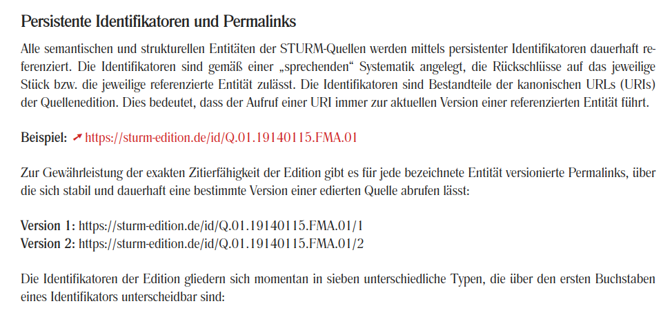Example Der Sturm:
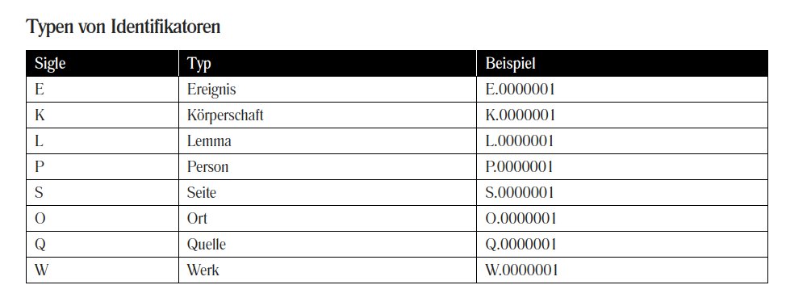Existing strategies for versioning
- description of changes
- revision description (directly in data)
- systems of version control
- versioning of the whole system
(Bürgermeister 2023)
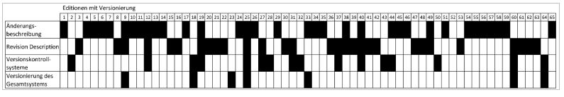2. Current practice in "Pessoa digital"
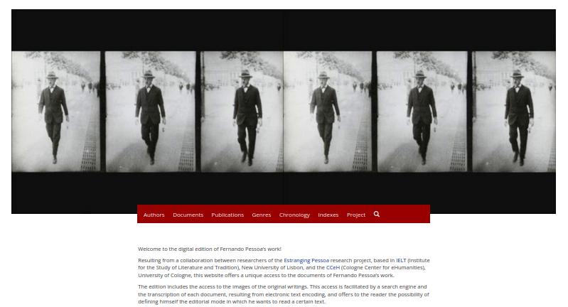Versioning from a content perspective
- Internal:
project-internal work from the start (since October 2014) - Beta:
website on-line, but work in progress (since 2016) - Version 1.0:
completion of poetry and prose published in lifetime and editorial projects 1913-35 (2021) - Version 2.0:
addition of more texts published in lifetime (poetry and prose), modernized spelling (2022)
Description of version 1.0
"The website presents, in its 1.0 version, the edition of Fernando Pessoa’s editorial projects, elaborated between 1913 and 1935, as well as the poetry published by the author in journals and magazines, from 1914 onwards, and the prose published in journals and literary magazines, after 1912. This edition includes 248 documents of the literary estate, 72 publications of poetry and 91 of prose."
Description of version 2.0
The website presents, in its 2.0 version, the edition of Fernando Pessoa’s editorial projects, elaborated between 1913 and 1935, as well as the poetry published by the author, from 1914 onwards, and the prose published after 1912, independently or in books. This edition includes 248 documents of the literary estate, 78 publications of poetry and 133 of prose. All texts published by the author are presented in two versions, with original and modernized spelling.
Citing of versions
Citation suggestions contain version number, e.g.:
whole edition:
Sepúlveda, Pedro, Ulrike Henny-Krahmer, and Jorge Uribe (eds).
Digital Edition of Fernando Pessoa. Projects and Publications.
Lisbon and Cologne: IELT, New University of Lisbon and CCeH, University of Cologne 2017-2022.
Version 2.0. <http://www.pessoadigital.pt>. DOI: 10.18716/cceh/pessoa.
single document:
Sepúlveda, Pedro, Ulrike Henny-Krahmer, and Jorge Uribe (eds).
"BNP/E3 8-3v."
Digital Edition of Fernando Pessoa. Projects and Publications.
Lisbon/Cologne: IELT/CCeH, University of Cologne 2017-2022. Version 2.0.
<http://www.pessoadigital.pt/doc/BNP_E3_8-3v/diplomatic-transcription> DOI: 10.18716/cceh/pessoa
Versioning from a technical perspective
From the beginning, the edition was developed in a public Git repository: https://github.com/cceh/pessoa
Additions and deletions over time
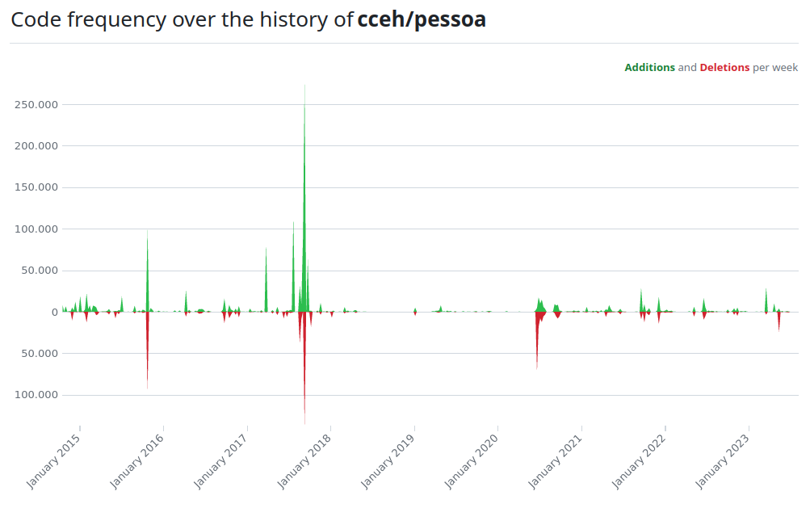Commits over time
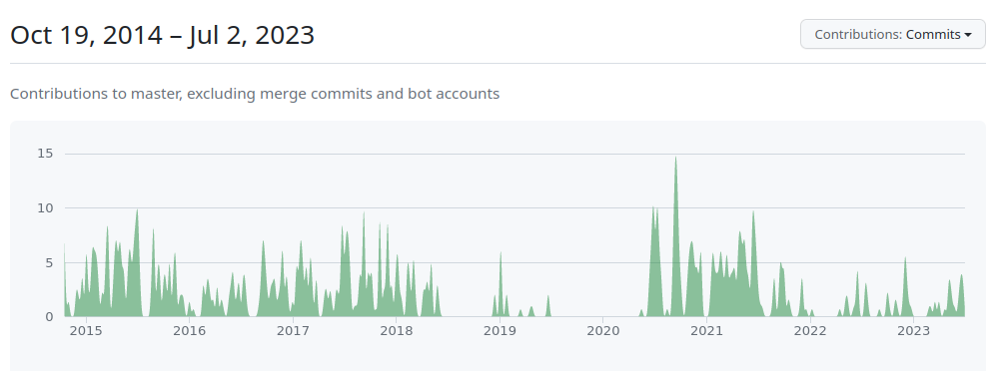Contributors over time
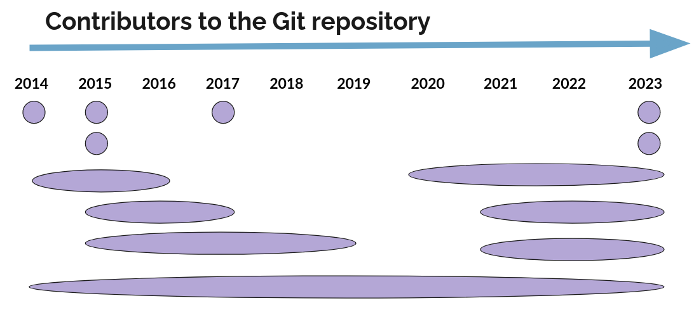3. Proposals for new approaches
How to improve versioning in "Pessoa digital"?
| 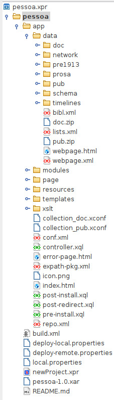 |
|
How to improve versioning in "Pessoa digital"?
|
Why and how?
|
How to improve versioning in "Pessoa digital"?
... on the level of contents & data ...
Describe changes in TEI files! 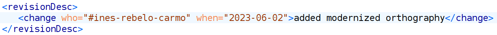
How to improve versioning in "Pessoa digital"?
... on the code level ...
- Create technical Releases of both repositories.
- Number the releases appropriately
(e.g., with "semantic versioning"). - Document and describe the releases appropriately in words
(what was done?) - Archive these releases
(e.g., on Zenodo).
What are releases?
You can create a release to package software, along with release notes and links to binary files, for other people to use.
Releases are deployable software iterations you can package and make available for a wider audience to download and use.
Releases are based on Git tags, which mark a specific point in your repository's history. A tag date may be different than a release date since they can be created at different times. For more information about viewing your existing tags, see "Viewing your repository's releases and tags."
Source: https://docs.github.com/en/repositories/releasing-projects-on-github/about-releases
What is semantic versioning?
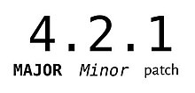Source: Wikipedia
What is Zenodo?
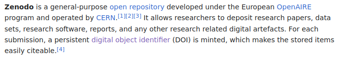Source: Wikipedia
Summarized:
|
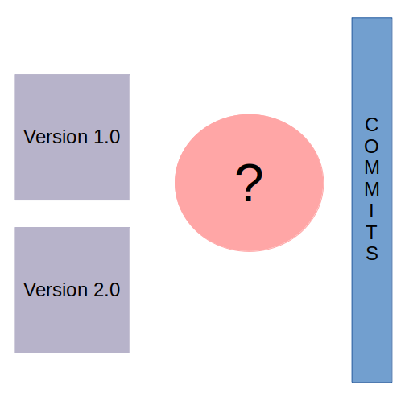 |
Conlusions - Some essential things
|
References
- Broyles, Paul A. (2020). "Digital Editions and Version Numbering." Digital Humanities Quarterly 14 (2). https://web.archive.org/web/20230702124317/https://www.digitalhumanities.org/dhq/vol/14/2/000455/000455.html.
- Bürgermeister, Martina (2023). "Versionierung von digitalen Editionen in der Praxis." In: SIDE 16. Digitale Edition in Österreich. Edited by Roman Bleier and Helmut W. Klug. Norderstedt: Books on Demand, 133-150.
- Gengnagel, Tessa (2017). "The ‘Beta Dilemma’ – A Review of the Faust Edition." RIDE 7. https://ride.i-d-e.de/issues/issue-7/faustedition/. DOI: 10.18716/ride.a.7.3.
- Sepúlveda, Pedro, Ulrike Henny-Krahmer, and Jorge Uribe (eds) (2017-2022). Digital Edition of Fernando Pessoa. Projects and Publications. Lisbon and Cologne: IELT, New University of Lisbon and CCeH, University of Cologne. Version 2.0. http://www.pessoadigital.pt. DOI: 10.18716/cceh/pessoa.
Thank you!
Slides at: https://hennyu.github.io/pessoa_23/